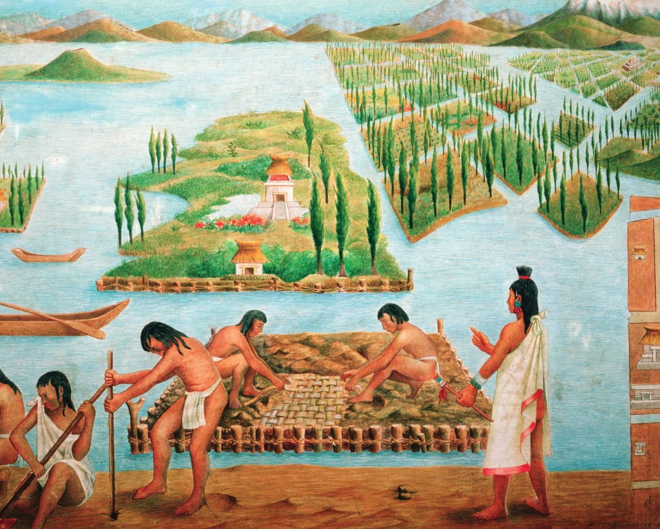
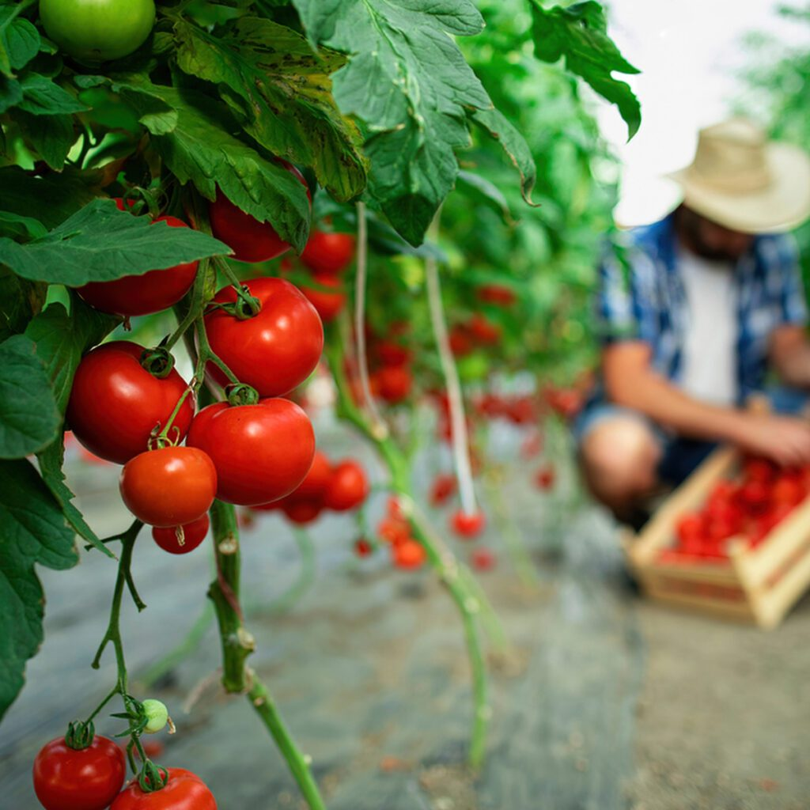

(partes do Chile, Equador, Peru, Bolívia)
cultivado intensamente pelos povos originarios da América do Sul. O tomate
foi popularizado no Mexico e levado pelos espanhóis para Europa,
lá ele era cultivado como uma planta ornamental
por acharem ser uma planta venenosa. Com o tempo a Itália aperfeiçoou o seu cultivo e o
batizou de pomodoro,
por causa de suas variantes amareladas. Hoje em dia o tomate é popular no mundo inteiro, frequentemente confundido
como legume, porém é botanicamente uma baga que se destaca pelo alto teor de licopeno, vitaminas e minerais.
Época: O tomateiro depende das condições climáticas para produzir, como a temperatura do ambiente e a luminosidade. A temperatura ideal para
o plantio do tomate é de 21ºC. Aqui no Brasil é possivel plantar tomates o ano todo, evitado períodos de chuvas intensas, mas na região
sul é recomendado plantar entre os meses de setembro a fevereiro e na região norte entre os meses de março a julho.
Plantio: A semeadura Pode ser direta ou em bandejas, colocando 2 a 3 sementes por célula, em cerca de 20 a 30 dias é feito o transplante das mudas que
estão prontas para o local definitivo (pode ser vaso ou um canteiro). O local precisa de sol direto no mínimo 4 horas por dia e o solo drenável.
Durante o crescimento é essencial tutorar as plantas de crescimento indeterminado para garantir o desenvolvimento.
Floração: As flores aparecem geralmente 30 ou 40 dias após o transplante da muda, são autopolinizáveis, mas a presença de vento e insetos ajuda.
O tomateiro é sensível a temperaturas extremas e é exigente em nutrientes, para um melhor desenvolvimento é recomendado uma adubação rica em
fósforo e cálcio além de manter o solo úmido. A colheita pode se inicia 80 a 110 dias após a semeadura.

O tomate apresenta várias espécies cada uma com suas características:
| 100 g** | 85 g | %VD* | |
|---|---|---|---|
| Valor energético (kcal) | 78 | 380 | 19 |
| Carboidratos (g) | 10 | 49 | 16 |
| Açúcares totais (g) | 0,2 | 0,9 | |
| Açúcares adicionados (g) | 0 | 0,1 | 0 |
| Proteínas (g) | 2 | 9,8 | 20 |
| Gorduras totais (g) | 3,3 | 16 | 25 |
| Gorduras saturadas (g) | 1,4 | 6,8 | 34 |
| Gorduras trans (g) | 0 | 0 | 0 |
| Fibras alimentares (g) | 0,8 | 3,7 | 15 |
| Sódio (mg) | 297 | 1428 | 71 |
| Vitamina B1 (mg) | 0,16 | 0,77 | 64 |
| Vitamina B2 (g) | 0,17 | 0,82 | 68 |
| Vitamina B3 (mg) | 2,3 | 11 | 73 |
| Vitamina B6 (mg) | 0,19 | 0,91 | 70 |
O tomate possui vários benefícios para a saúde, ele é rico em "lipoceno", um antioxidante que dá a cor vermelha e combate radicais livres. O licopeno protege as células do corpo contra o envelhecimento precoce e doenças crônicas, além disso o tomate é rico em vitamina A, C e complexo B, que melhora a saúde da pele e visão. Ele também possui minerais como o ferro, cálcio e magnésio e o potássio que, junto com os antioxidantes ajudam a controlar a pressão arterial e a saúde do coração. O tomate apresenta baixo teor de carboidratos sendo excelente para dietas de emagrecimento. O mais incrível sobre o tomate é que seus benefícios se potencializam com o calor.
Aqui está uma lista com as melhores receitas com tomate:
Corte a parte superior dos tomates e retire a polpa. Refogue a cebola e o alho, adicione a carne e tempere. Recheie os tomates, cubra com queijo e leve ao forno por 20 minutos a 180°C.
Coloque os tomates em uma assadeira, adicione o alho, ervas e sal. Cubra com azeite e leve ao forno a 120°C por cerca de 1h30, até ficarem macios e levemente caramelizados.
Refogue a cebola e o alho no azeite. Adicione os tomates picados e cozinhe por 20 minutos. Tempere com sal, uma pitada de açúcar e finalize com manjericão. Bata no liquidificador se desejar um molho mais liso.